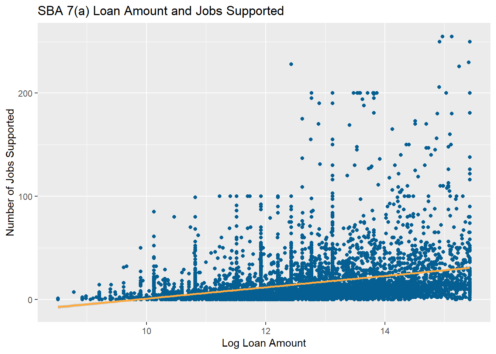
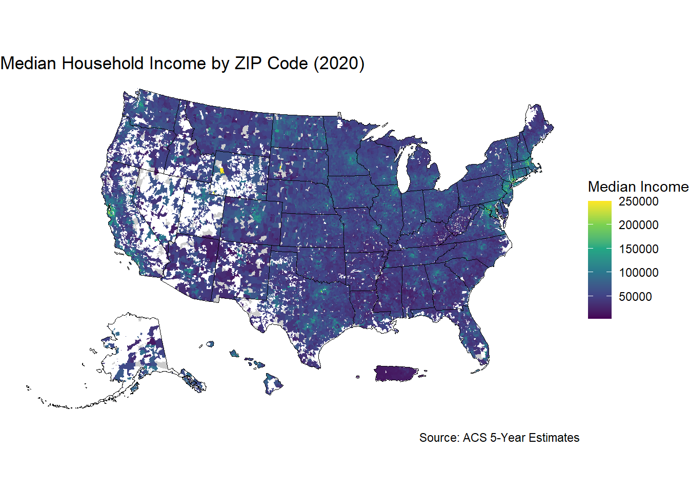
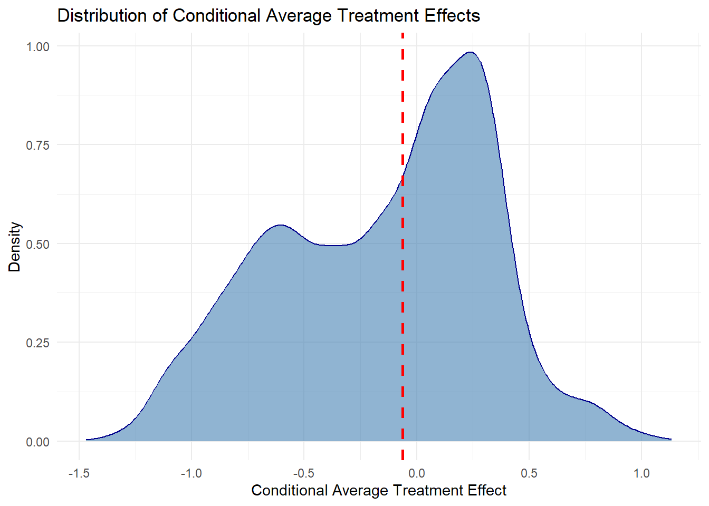
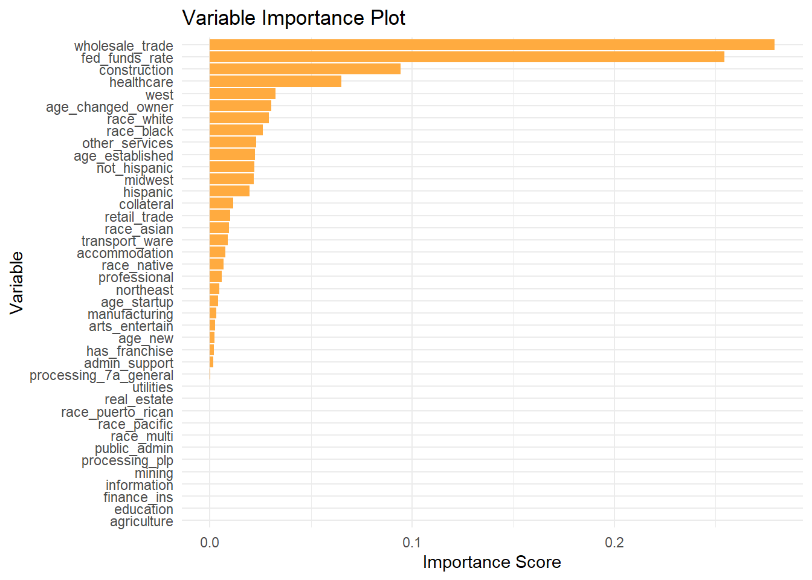

# Load Libraries
# Install Packages with install.packages() if needed
library(tidyverse)
library(devtools)
library(stringr)
library(ggplot2)
library(grf)
library(lmtest)
library(sandwich)
library(estimatr)
library(hrbrthemes)
library(viridis)
library(tidycensus)
library(sf)
library(tigris)
library(modelsummary)
library(purrr)
library(lubridate)
library(stargazer)A Brief Guide to Using R with Public Data
Introduction
This guide provides a practical template for using R to analyze public lending data from the Small Business Administration (SBA), including its Paycheck Protection Program (PPP) and 7(a) Loan programs. You’ll learn how to clean and organize data, conduct exploratory analysis, build regression models, create impactful data visualizations, and apply machine learning methods for causal inference using random forests.
We use real-world datasets to demonstrate each technique. In addition to SBA data, we also incorporate demographic and geographic information from the U.S. Census Bureau to improve our analysis with spatial and socioeconomic context along with data on the federal funds rate to demonstrate basic joining techniques. This guide uses a small subset of the PPP and 7(a) data, which can be found along with the project code on the project Github page. The complete and most recent data can be found on the SBA’s Open Data page.
While this guide walks through the logic and steps behind the analysis, it assumes prior familiarity with R syntax, functions, and data types. If you’re new to R or need a refresher, we’ve included a list of recommended resources at the end.
Each section of the guide uses this public data to examine different relationships in SBA lending. Along the way, we cover topics like:
Tidying and joining messy datasets from different sources
Creating efficient code using loops and conditional statments
Making regression models and using heteroskedasticity robust or cluster robust standard errors
Matching data from the Census Bureau with ZIP Code Tabulation Areas (ZCTAs)
Visualizing treatment effect heterogeneity across loan recipients
By the end, you’ll have a reproducible workflow that blends conventional statistical modeling with machine learning tools, built on public data.
Let’s get started by loading the necessary packages and preparing our working environment.
R Packages
First we need to load the packages we will use for this analysis. R is open source, and package development allows individuals to contribute new packages to improve workflows and performance. Packages are crucial to using R effectively. The R-Universe search engine is a useful resource to find packages and documentation. Searching through vignettes and package documentation can also help you understand usage better.
Before using packages for the first time, you need to install them with the install.packages function. This step only needs to be completed once. Then using the library function, we load and attach the packages used for our project. This step should be repeated in each R session. It’s best practice to list all required packages at the start of your code, so others can install them if needed.
Next we need to load our data into the R environment. We also have data from the Federal Reserve on the Federal Funds Rate over time, which we will later use for an example on joining different data frames.
df <- read.csv("Data/sba_sample_data.csv")
fed_funds <- read.csv("Data/fed_funds.csv")Renaming Variables
Before we join the two data frames from the SBA and the Federal Reserve, we want to rename variables to match our desired format. Public data can often be formatted inconsistently, and different organizations will often follow different variable naming conventions. Changing the names to a consistent style will help you stay organized and save you time in the long run. In this guide, we will keep all data frame and variable names lowercase and separate different words with an underscore. One example of the changes we will make below is changing the name of the federal funds rate variable from FEDFUNDS to fed_funds_rate using the rename function.
# Renaming variables for a consistent style
df <- df |>
rename(
initial_interest_rate = InitialInterestRate,
jobs_supported = JobsSupported,
approval_year_month = ApprovalYearMonth,
lmi_indicator = LMIIndicator,
gross_approval = GrossApproval,
race = Race
)
fed_funds <- fed_funds |>
rename(
fed_funds_rate = FEDFUNDS
)Joining the Two Data Frames
Joining two data frames can be used to make it easier to work with data from different sources. The R environment does allow you to work with multiple unjoined data frames, but it is often more convenient to join them if you plan on using these data together multiple times. Below we will join data on the federal funds rate with our main data frame to add another variable for our analysis. The fed_funds data frame currently only contains two variables: observation_date and fed_funds_rate. We will use the observation date, which is reported on the first day of every month, to join with our main data frame. We use the mutate function to add these new month variables to our data frame that we will use as merge keys. Be sure to name your variables in a consistent manner and track the changes you’ve made to your data.
# Joining Federal Funds and SBA Data Frames by Date
# Create a Merge Key to Match Based on Month
df <- df |>
mutate(
merge_key = ym(approval_year_month)
)
fed_funds <- fed_funds |>
mutate(
merge_key = floor_date(as.Date(observation_date), unit = "month")
)
df <- inner_join(df, fed_funds, by = "merge_key")Data Analysis in R
R has many tools for statistical analysis and through packages such as estimatr or fixest. In this section, we will first discuss creating summary statistics and indexing data. Then we will briefly touch on linear regression models using Ordinary Least Squares (OLS), adding controls, robust standard errors, and clustering. Finally, we will plot the results in regression tables using the stargazer and modelsummary packages.
Summary Statistics
R allows you to efficiently find summary statistics for data such as mean, median, mode, and interquartile range. If we only want to find this information for one variable, the summary function will output the mean, median, and IQR. We can use this information for loan interest rate and just get the summary statistics across the entire sample.
# Summary Statistics with the summary() Function
summary(df$initial_interest_rate) Min. 1st Qu. Median Mean 3rd Qu. Max.
0.740 5.500 8.000 8.176 10.500 15.000 We can also use the tapply function to index this information about particular subsets. The first argument in the tapply function is the variable of interest. Then the second argument is the variable that we will use as an index, and the third is the function that you wish to use for your analysis. In this example we use the mean function to examine the differences in average interest rate across people of different races. The na.rm = T argument at the end tells R to omit NA values from the analysis.
# Indexing Summary Statistics with tapply()
tapply(df$initial_interest_rate, df$race, mean, na.rm = T) American Indian or Alaska Native
8.572316
Asian
7.886574
Black or African American
9.051211
Native Hawaiian or Other Pacific Islander
9.190625
Unanswered
8.208562
White
8.108846 Alternatively, we can use the summarize function from tidyverse to complete a similar task. This function is similar to the earlier functions rename and mutate, where we perform multiple operations and nest functions inside of it. The summarize function outputs a data frame that returns one row for each group. We use the na.omit function, so we don’t need to type out na.rm = T as an argument in each of the sd functions we type. We can specify that we are using the race variable for our groups by using the group_by function. We will find the standard deviation the loan approval amounts and interest rates.
# Indexing Multiple Summary Statistics with summarize()
df |>
na.omit() |>
group_by(race) |>
summarize(
sd_interest = sd(initial_interest_rate),
sd_approval = sd(gross_approval)
)# A tibble: 6 × 3
race sd_interest sd_approval
<chr> <dbl> <dbl>
1 American Indian or Alaska Native 3.05 880686.
2 Asian 2.96 1206682.
3 Black or African American 2.96 653096.
4 Native Hawaiian or Other Pacific Islander 2.77 967943.
5 Unanswered 2.85 1059824.
6 White 2.90 796723.Regression Models in R
Now that we have the federal funds rate variable from the last section, it is easier to use for our regression analysis. In R, the lm function is used to create basic linear regression models. In our first example we will examine if we find a relationship between the interest rates of SBA 7(a) loans and the federal funds rate. In the lm function, we need to specify a formula. We first list our dependent variable, which is separated from our independent variable with a ~. We assign the regression to an object and then use the summary function to see the regression output.
# Linear Regression of SBA 7a Interest Rate on Federal Funds Rate
reg <- lm(initial_interest_rate ~ fed_funds_rate, data = df)
summary(reg)
Call:
lm(formula = initial_interest_rate ~ fed_funds_rate, data = df)
Residuals:
Min 1Q Median 3Q Max
-7.9788 -0.6529 0.0863 0.5971 5.8903
Coefficients:
Estimate Std. Error t value Pr(>|t|)
(Intercept) 5.30577 0.02472 214.7 <2e-16 ***
fed_funds_rate 1.07921 0.00698 154.6 <2e-16 ***
---
Signif. codes: 0 '***' 0.001 '**' 0.01 '*' 0.05 '.' 0.1 ' ' 1
Residual standard error: 1.428 on 7655 degrees of freedom
Multiple R-squared: 0.7574, Adjusted R-squared: 0.7574
F-statistic: 2.391e+04 on 1 and 7655 DF, p-value: < 2.2e-16Multiple Regression
We might want to add multiple control variables to our regression if we want to examine more complex topics. For example, we may want to see if Black loan recipients face higher interest rates than people of other races or ethnicities. We can add more independent variables to the model if we use a + behind the previous independent variable. This regression uses the race and ethnicity responses from PPP loan applications for its race and ethnicity categories. The comparison group are people who left the race or ethnicity question unanswered.
race_reg <- lm(initial_interest_rate ~ fed_funds_rate + race_black + hispanic +
race_white + race_asian + race_native + not_hispanic, data = df)
summary(race_reg)
Call:
lm(formula = initial_interest_rate ~ fed_funds_rate + race_black +
hispanic + race_white + race_asian + race_native + not_hispanic,
data = df)
Residuals:
Min 1Q Median 3Q Max
-7.9893 -0.6672 0.0161 0.5628 5.8558
Coefficients:
Estimate Std. Error t value Pr(>|t|)
(Intercept) 5.340544 0.035219 151.639 < 2e-16 ***
fed_funds_rate 1.073615 0.006995 153.492 < 2e-16 ***
race_black 0.637720 0.085606 7.449 1.04e-13 ***
hispanic 0.143815 0.075391 1.908 0.056483 .
race_white 0.089638 0.047365 1.892 0.058464 .
race_asian 0.085279 0.063315 1.347 0.178053
race_native 0.104600 0.150592 0.695 0.487334
not_hispanic -0.176347 0.048200 -3.659 0.000255 ***
---
Signif. codes: 0 '***' 0.001 '**' 0.01 '*' 0.05 '.' 0.1 ' ' 1
Residual standard error: 1.422 on 7649 degrees of freedom
Multiple R-squared: 0.7599, Adjusted R-squared: 0.7597
F-statistic: 3458 on 7 and 7649 DF, p-value: < 2.2e-16Robust Regression
Standard linear regression models, such as those estimated using lm() in R, rely on assumptions that often don’t hold in real-world data—especially in observational datasets like those from the SBA. One key assumption is homoskedasticity, meaning that the variance of the error terms is constant across all observations. However, in real-world data, this assumption is frequently violated. When that happens, your standard errors can be misleading, and your statistical significance tests may no longer be valid.
Robust regression techniques help address this issue by adjusting the standard errors to account for heteroskedasticity across groups (like ZIP codes or time periods). This makes our inference more reliable.
In this guide, we demonstrate two key ways to improve the reliability of your regression estimates:
- Heteroskedasticity-robust standard errors, which correct for unequal error variance.
- Cluster-robust standard errors, which adjust for correlated errors within clusters, such as repeated observations in the same time period.
These adjustments are especially important in policy analysis, where failing to account for underlying data structure can lead to incorrect conclusions about the relationships we examine. We use the estimatr package to add these robust standard errors to our regression models examining the association between race and logged 7(a) loan volume below.
robust_reg <- lm_robust(log_approval_amount ~ fed_funds_rate + race_black +
hispanic + race_white + race_asian + race_native +
not_hispanic, se = "stata", data = df)
summary(robust_reg)
cluster_reg <- lm_robust(log_approval_amount ~ fed_funds_rate + race_black +
hispanic + race_white + race_asian + race_native +
not_hispanic, se = "stata", clusters = approval_year_month
, data = df)
summary(cluster_reg)Creating Regression Tables
The stargazer and modelsummary packages can be used to create presentation-ready regression tables from your regression output. We will use the model summary package here, because it is better at handling the robust regression objects from the estimatr package than stargazer. We put the regression objects created earlier into a list as the first argument for the modelsummary function. Modelsummary output is very customizable, and a full list of arguments can be found in this vignette. In this example, I use the stars argument to show the statistical significance of the estimates, gof_omit to reduce the type of statistics shown in the summary, statistic to get standard errors under the regression coefficients, and title to add a title to the table.
# Model Summary Regression Table
modelsummary(
list(
"Robust SEs" = robust_reg,
"Clustered SEs" = cluster_reg
),
statistic = "std.error",
stars = TRUE,
gof_omit = "IC|Log|F|Adj|Std|AIC|BIC",
title = "Regression Results: Robust vs. Clustered Standard Errors",
output = "html")| Robust SEs | Clustered SEs | |
|---|---|---|
| + p < 0.1, * p < 0.05, ** p < 0.01, *** p < 0.001 | ||
| (Intercept) | 12.814*** | 12.814*** |
| (0.035) | (0.071) | |
| fed_funds_rate | −0.058*** | −0.058*** |
| (0.007) | (0.014) | |
| race_black | −0.662*** | −0.662*** |
| (0.082) | (0.081) | |
| hispanic | −0.219** | −0.219** |
| (0.071) | (0.080) | |
| race_white | −0.433*** | −0.433*** |
| (0.046) | (0.055) | |
| race_asian | 0.103 | 0.103 |
| (0.064) | (0.083) | |
| race_native | −0.326* | −0.326* |
| (0.140) | (0.157) | |
| not_hispanic | 0.004 | 0.004 |
| (0.047) | (0.047) | |
| Num.Obs. | 7657 | 7657 |
| R2 | 0.044 | 0.044 |
| RMSE | 1.36 | 1.36 |
Data Visualization
R offers a variety of visualization tools that allow us to easily explore trends in our data, but the most powerful and flexible option is the ggplot2 package. Built on the grammar of graphics, ggplot2 makes it easy to construct layered, customizable plots with consistent syntax. We’ll use it throughout this guide to create our graphics.
ggplot2
I recommend learning how to use the ggplot2 package instead of the base R plotting techniques. It uses a layered approach to graphing where adding components to different graphs follows the same basic steps. There is not a one-size-fits-all approach, but in general you start with the ggplot command followed by the data you are going to use. Then you map to an aesthetic using aes, where you can specify your X and Y axis. Afterwards you can specify a graph type using the different variants of the geom functions. Additional layers and arguments are added using a + after the end of each argument.
Below we will create a simple scatter plot of the number of jobs supported based on the log of SBA 7(a) loan size and add a trend line with an error bar. We can also use a similar format for other types of visuals, and resources like the ggplot cheat sheet can show you how to use this same format for other types of visuals.
# Scatter Plot of Jobs Supported and Log Loan Amount
ggplot(data = df,aes(x = log_approval_amount, y = jobs_supported))+
geom_point(color = "#065f92") +
geom_smooth(method = lm, color = "#ffab40", se = T)+
labs(
title = "SBA 7(a) Loan Amount and Jobs Supported",
x = "Log Loan Amount",
y = "Number of Jobs Supported"
)`geom_smooth()` using formula = 'y ~ x'
Spatial Data and Mapping
The data from the SBA has loan-level location data in the form of ZIP codes. We can use this to add more demographic data from the Census Bureau and to map where loans are distributed. The tidycensus and tigris packages have made getting and using Census Bureau data for analysis much easier in R. If you plan to gather large amounts of data, then you should request a Census Data API key. They are free, and this guide will presume that you have one from this point on.
Getting American Community Survey Data
After getting your Census Data API key, you can use the tidycensus census_api_key function to load your key into the environment. Using the install = TRUE argument keeps the key installed for future sessions. Afterwards we can use the get_acs function to call the Census Data API for data from the American Community Survey (ACS). The tidycensus package also has functions to get data from the Decennial Census, Public Use Microdata, and Population Estimates APIs. Here we will get ZCTA-level data on median income to add to our analysis to see if SBA lending differs in wealthier areas. Adding the geometry = TRUE argument also gets us the ZCTA shape files that we will later use for plotting our data. We then use the shift_geometry function from the tigris package, which rearranges the geometry of the states and territories for our plots later in this section. The resolution = "20m" argument is key here, or the small archipelago of islands northwest of Hawaii will throw off our plots.
# Add to tidycensus package and install to keep for use in future sessions
census_api_key(YOUR_KEY_HERE, install = TRUE)
# Get Median Income by ZCTA
zip_income <- get_acs(
geography = "zip code tabulation area",
variables = c(median_income = "B19013_001"),
year = 2020,
survey = "acs5",
output = "wide",
geometry = TRUE,
resolution = "20m",
progress_bar = FALSE
) |>
rename(median_income = median_incomeE) |>
select(median_income, GEOID, geometry) |>
shift_geometry()Joining SBA and Census Bureau Data
The SBA uses ZIP, which codes presents a few challenges for our work. Each ZIP Code is a collection of street addresses and delivery addresses, which are point-based codes. This may not be suitable to mapping, so the Census Bureau uses ZIP Code Tabulation Areas (ZCTAs) that are generalized aerial representations of ZIP Codes. Not all ZIP Codes have a ZCTA, but there are ZCTAs for all inhabited areas from the 2020 Census. ZCTAs are an imperfect match for ZIP codes, which adds noise to any statistical analysis that relies on exact matching between ZIP codes and ZCTAs. This is less of an issue for plotting, but it is still something you should keep in mind when using spatial data.
For the purpose of this guide, we will proceed to joining the two data frames based on matching ZIP Codes and ZCTAs. We use the the sprintf function, because the SBA ZIP codes are originally improperly coded as integers. Then we join the two data frames on ZIP code. The GEOID variable is the ZCTA variable pulled from the ACS.
# Joining our Main Data Frame with the ACS Data
df_joined <- zip_income |>
left_join(
df |>
mutate(zip_code = sprintf("%05s", zip_code)),
by = c("GEOID" = "zip_code")
)Census Data for Plotting and Analysis
Now that we have the median income in each ZCTA, we can use them in statistical analysis like the regression models discussed above. We can also start using this data for plotting using ggplot, but there are a few additional steps we will take this time to improve the quality of our plots. First, we will use the states function from the tigris package so that we can add state borders to our plot. We will also use the viridis package for our mapping, which contains several color blind-accessible palettes. Using the scale_fill_viridis function lets us specify a specific palette. Using viridis or other packages designed for accessibility is best practice when making visuals where distinguishing between different colors is important. We use the theme_void function at the end so that our visual is shown without grid lines in the background. When plotting choropleth maps, we use the geom_sf argument from ggplot2.
# Get State Lines for Graphing
state_borders <- states(cb = TRUE, resolution = "20m", progress_bar = F) |>
shift_geometry()Retrieving data for the year 2024# State Median Income Plot
ggplot(data = df_joined) +
geom_sf(
aes(fill = median_income),
color = NA
) +
scale_fill_viridis_c(
option = "viridis",
na.value = "grey80",
name = "Median Income"
) +
geom_sf(data = state_borders, fill = NA, color = "black", linewidth = 0.3) +
labs(
title = "Median Household Income by ZIP Code (2020)",
caption = "Source: ACS 5-Year Estimates"
) +
theme_minimal() +
theme(
legend.position = "bottom",
plot.title = element_text(hjust = 0.5, face = "bold")
)+ theme_void()
Causal Forests in a Nutshell
Causal forests are a type of random forest machine learning algorithm that are designed to be useful for causal inference. These models can act as a bridge between machine learning and causal inference techniques. You can create causal forests in R using the GRF (Generalized Random Forests) package. Causal forest models find the Conditional Average Treatment Effects (CATEs), which estimate the effect of a treatment on particular subgroup. These models are also useful for dealing with observational data, where the treatment and control groups may not be randomly assigned.
One way to address non-random assignment is through the R-Learner orthogonalization technique developed by Athey et al. You first get propensity scores and marginal outcomes by training two regression forests. Then you take the residuals of the propensity score and marginal outcomes and train the causal forest on these residuals. We create a small causal forest model below that estimates the treatment effects of using the 7(a) Express loan process on the initial interest rate of the loan. Afterwards we will discuss how to interpret the results and creating a variable importance plot for the model. A more detailed practical explanation of causal forests can be found on the GRF package Github page. I also conducted research on the effect of receiving a PPP loan on 7(a) loan amounts and interest rates that can be found on the project Github page.
We start by cleaning our joined data frame to omit variables that we are not interested in having in the model. We also need to make sure that our variables are numeric. Then we assign our variables for the model. Our outcome of interest, initial interest rate, is Y, and our loan processing treatment variable is W. All other variables we have are going to be used as covariates in the model
# Causal Forest Example
# Removing NA Values from
variables_to_keep <- c("agriculture", "mining", "utilities", "construction",
"manufacturing", "wholesale_trade", "retail_trade",
"transport_ware", "information", "finance_ins",
"real_estate", "professional", "admin_support",
"education", "healthcare", "arts_entertain",
"accommodation","other_services", "public_admin",
"age_established", "age_new", "age_startup",
"age_changed_owner", "processing_plp", "processing_express",
"processing_7a_general", "collateral",
"race_black", "race_white",
"race_asian", "race_native",
"race_multi", "race_pacific", "race_puerto_rican",
"hispanic", "not_hispanic", "has_franchise", "west",
"northeast", "midwest", "fed_funds_rate",
"initial_interest_rate" )
df_joined <- df_joined |>
na.omit()
dfm_joined <- df_joined[, variables_to_keep]
dfm_joined <- dfm_joined |>
st_drop_geometry()
#######
Y <- dfm_joined$initial_interest_rate
W <- dfm_joined$processing_express
X <- dfm_joined[,!(names(dfm_joined) %in% c("initial_interest_rate",
"processing_express"))] |>
as.matrix()
# R-Learner and Orthogonalization
# Propensity Score Matching
prop_forest <- regression_forest(X, W,
num.trees = 1500,
min.node.size = 8)
# Predicted Propensity Scores
prop_scores <- predict(prop_forest)$predictions
# Outcome Forest
out_forest <- regression_forest(X, Y,
num.trees = 1500,
min.node.size = 8)
# Marginal Outcome Prediction
marginal_out <- predict(out_forest)$predictions
# Train Causal Forest on residual treatment and outcome
residual_treat <- W - prop_scores
residual_out <- Y - marginal_out
# Remove Propensity and Outcome Forests to save on Memory
rm(prop_forest, out_forest)
rlearner <- causal_forest(X, residual_out, residual_treat,
num.trees = 1500,
min.node.size = 8)
# Get Predicitions
tau_hat <- predict(rlearner,)$predictions
summary(tau_hat) Min. 1st Qu. Median Mean 3rd Qu. Max.
-1.46927 -0.53944 -0.06243 -0.15125 0.22626 1.13395 # Confidence interval for the mean CATE of the test group
# Sample size
n <- length(tau_hat)
# Mean and standard error
mean_cate <- mean(tau_hat)
se_cate <- sd(tau_hat) / sqrt(n)
# 95% Confidence Interval using normal approx
ci_lower <- mean_cate - 1.96 * se_cate
ci_upper <- mean_cate + 1.96 * se_cate
cat("95% CI:", round(ci_lower, 4), "to", round(ci_upper, 4), "\n")95% CI: -0.1619 to -0.1406 # Plot the Distribution of the Treatment Effects
tau_df <- tibble(tau_hat = as.vector(tau_hat))
# Plot density of tau_hat
ggplot(tau_df, aes(x = tau_hat)) +
geom_density(fill = "steelblue", alpha = 0.6, color = "darkblue") +
geom_vline(xintercept = median(tau_df$tau_hat),
linetype = "dashed", color = "red", linewidth = 1) +
labs(
title = "Distribution of Conditional Average Treatment Effects",
x = "Conditional Average Treatment Effect",
y = "Density"
) +
theme_minimal()
The conditional average treatment effects of the model are represented by the tau hat variable. We can interpret the results of the model by looking at the mean and median CATE. The interpretation of the mean value is that on average, people who receive a 7(a) Express loan have an interest rate that is .03 percentage points higher than those who used a different processing method. The median CATE being higher than the mean indicates that there are outlier values where some 7(a) Express loan recipients ended up with lower results.
This difference suggests that there may be outliers or certain subgroups that are affected differently by receiving the treatment. We can create a density plot to examine the distribution of treatment effects. The dotted red line in the plot shows the median treatment effect, which can be a useful reference point in these plots. The plot shows that the CATEs have a bimodal distribution. One subgroup appears to receive significantly higher interest rates, while the other may get interest rates that are lower or the same using the 7(a) Express or other loan processing methods.
Variable Importance Plots
Now that we have estimates of the average treatment effects, we may want to understand what variables contributed the most to our analysis. This is particularly important if we want to determine which subgroup has a higher interest rate associated with using the 7(a) Express process. We can use the variable_importance function to create a list that scores how much each covariate contributed to our predictions of the outcome variable. Then we create a data frame and order them in descending order of importance. We then use ggplot and geom_col to create the importance plot.
Our results are not particularly surprising, because we find the federal funds rate is the most important variable in estimating interest rates of a 7(a) loan. Other factors such as business sector, age, the race and ethnicity of the borrower, and region are also important. This plot can be used to refine our analysis in the future, because it shows us what variables are not contributing to the model. This means that they can be omitted in the future without a negative effect on the quality of our estimates.
There isn’t a set rule about at which point you can feel comfortable removing variables from your model. This process is often iterative, as you adjust your model give the best predictions. Try to look for places where there are jumps in the variable importance plot, such as between the healthcare and franchise variables. Make sure to double-check how your model performs and if the results still make sense after any changes.
Note that these plots only tell us that certain variables are important for the model predictions. They do not tell us how these variables affect the direction of the predictions. For example, this plot tells us that providing collateral for a 7(a) loan should affect the loan interest rate, but it does not tell us if this is associated with the interest rate increasing or decreasing. If we wanted to go further in our analysis, we could take a subset of the CATEs using some of the important variables we found here and assess which group is the one that might face higher interest rates with the 7(a) Express processing method.
# Arrange in descending order of importance
var_imp <- variable_importance(rlearner)
var_imp_df <- data.frame(
variable = colnames(X),
importance = var_imp
)
var_imp_df <- var_imp_df |>
arrange(desc(importance))
ggplot(var_imp_df, aes(x = reorder(variable, importance), y = importance)) +
geom_col(fill = "#ffab40") +
coord_flip() +
labs(
title = "Variable Importance Plot",
x = "Variable",
y = "Importance Score"
)+
theme_minimal()